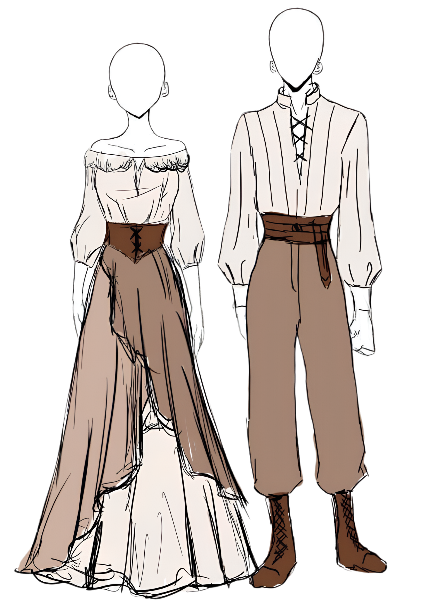
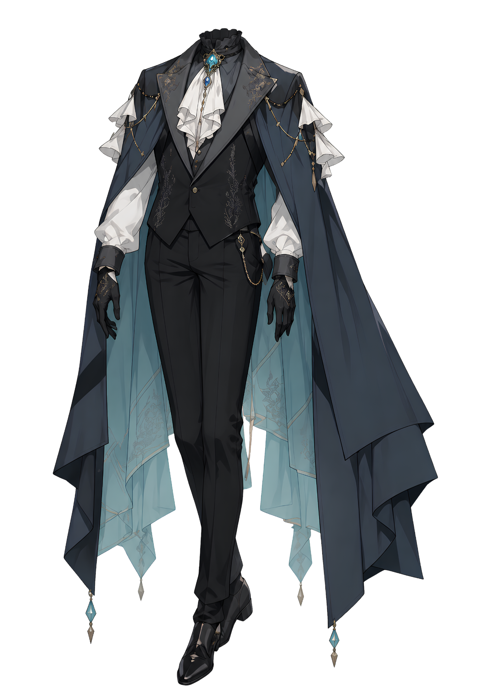
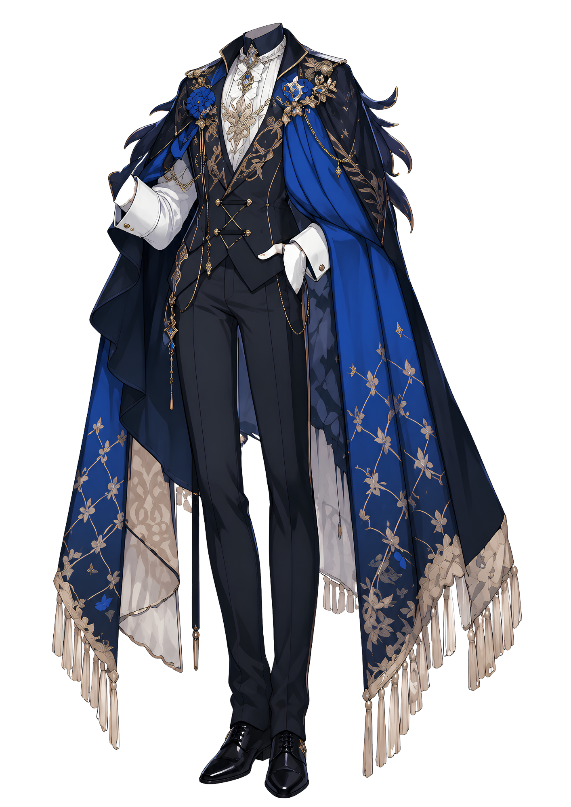
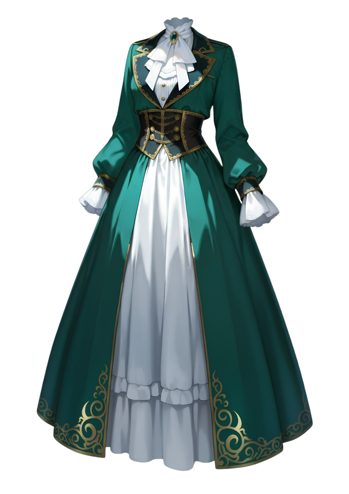
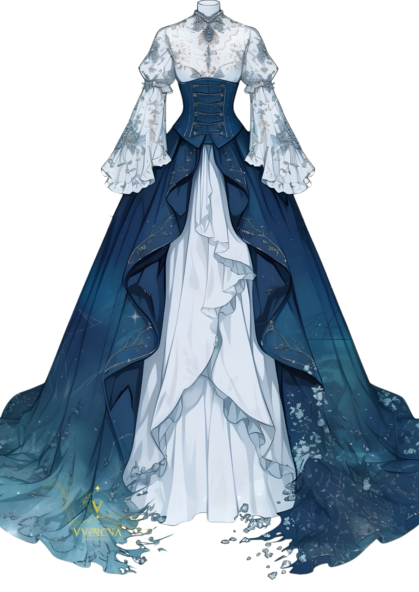
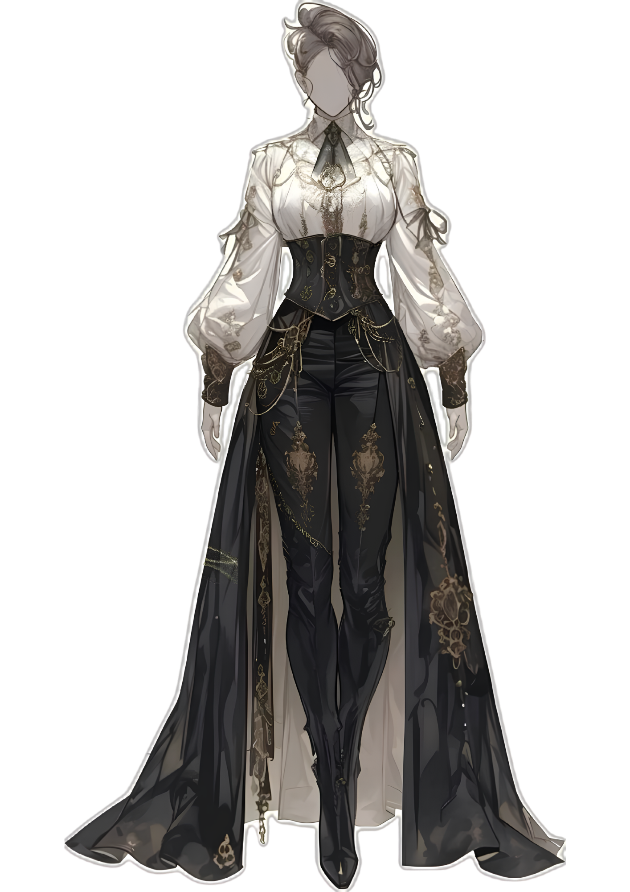

La sociedad

Contenido

La Sociedad

"La elegancia no oculta la podredumbre. Solo la perfuma."
La sociedad de Vhaldyr está estructurada en una jerarquía compleja que refleja las diferencias de poder, riqueza y estatus social. Además, es especialmente cruel no solo con los más desfavorecidos, sino incluso con aquellos que se encuentran en posiciones de privilegio pero son considerados como indignos por su comportamiento o nacimiento.
Sobrevivir en la venenosa sociedad que conforma a este reino a veces se considera todo un logro, puesto que no muchos se atreven a volver a pisarla una vez han sido humillados sin piedad por aquellos que la gobiernan.
Desde los ojos de muchos, por no decir todos, no sería mentira decir que la sociedad noble es un nido de serpientes del cual uno puede salir dificilmente bien parado sin haber hecho caer en desgracia la reputación de uno mismo y, en el peor de los casos, del apellido al completo.
Clases sociales
La sociedad de Vhaldyr se encuentra dividida en cinco grandes rangos sociales, determinados principalmente por el nacimiento, el título y la posición económica. Aunque existe cierta movilidad dentro de los estratos inferiores, ascender de una clase a otra resulta difícil y, en algunos casos, prácticamente imposible. La riqueza puede otorgar influencia y prestigio, pero no siempre permite superar las barreras establecidas por la jerarquía tradicional.
- La realeza. En la cúspide de la sociedad se encuentra la familia real, encargada de gobernar Vhaldyr. Su posición se encuentra por encima del resto de rangos y está acompañada de privilegios, riquezas y una enorme influencia sobre la vida política y social del reino.
- La nobleza. Comprende a las familias poseedoras de títulos nobiliarios, organizadas en una jerarquía formada por archiduques, duques, marqueses, condes, vizcondes y barones. Su posición suele heredarse y les proporciona tierras, privilegios y una considerable influencia dentro del reino. Incluso una persona de enorme riqueza perteneciente a la burguesía no posee automáticamente el mismo reconocimiento social que un noble.
- La burguesía. Formada principalmente por comerciantes, propietarios y familias que han conseguido acumular grandes fortunas sin pertenecer a la nobleza. Aunque carecen de títulos, su poder económico puede proporcionarles una influencia considerable, permitiéndoles acceder a determinados círculos sociales y mantener relaciones con familias nobles.
- La clase baja.Comprende a la mayor parte de la población, desde aldeanos y agricultores hasta herreros, panaderos, artesanos y otros trabajadores. Su posición económica es muy variable, pero en general poseen menos recursos, privilegios e influencia que las clases superiores. Constituyen la base sobre la que se sostiene buena parte de la actividad cotidiana del reino.
- Los esclavos. Ocupan el escalón más bajo de la sociedad y carecen de los derechos y libertades reconocidos al resto de la población. Su condición puede proceder del nacimiento, de la captura o de distintas circunstancias que hayan terminado vinculándolos a un propietario. Son considerados legal y socialmente inferiores, quedando sometidos a las normas impuestas por quienes poseen su propiedad.
- Archiduques. Ocupan el rango más elevado de la nobleza y están directamente vinculados a la familia real por parentesco. En Vhaldyr existen únicamente cuatro, convirtiéndolos en figuras excepcionales dentro de la aristocracia. Su cercanía con la Corona les concede una enorme influencia y un estatus prácticamente incomparable con el del resto de nobles.
- Duques. Son algunos de los individuos más poderosos del reino después de la familia real y los archiduques. Gobiernan extensos territorios, poseen numerosas tierras, residencias y ejercen una influencia considerable sobre la política y el ejército. Su posición les permite formar parte de la Cámara de los Lores de Vhaldyr, desde donde intervienen directamente en las decisiones que afectan al reino. Selkaron cuenta con dos familias ducales.
- Marqueses. Tradicionalmente vinculados a territorios fronterizos de especial importancia, los marqueses ocupan una posición de enorme prestigio y suelen desempeñar un papel destacado en la diplomacia. Su proximidad a las fronteras también les ha otorgado históricamente responsabilidades militares. Muchas familias de este rango conceden una importancia extraordinaria a la antigüedad y pureza de su linaje. En Selkaron existen ocho casas marquesales.
- Condes. Constituyen una de las capas más influyentes de la aristocracia. Son familias extremadamente ricas, con peso político y capacidad para mantener fuerzas militares propias o contribuir de manera significativa a los ejércitos del reino. Sin embargo, su posición puede ser más vulnerable que la de los rangos superiores: las deudas, los escándalos familiares o las relaciones extramaritales pueden llevar a una casa condal a perder buena parte de su prestigio. Quizá por esa mezcla de riqueza, poder y decadencia, los condes se han convertido también en protagonistas habituales de las novelas y relatos populares. Selkaron cuenta con doce.
- Vizcondes. Suelen representar a las familias que han accedido recientemente a la nobleza, normalmente entre treinte y cincuenta años atrás, frente a casas cuyos títulos cuentan con siglos de historia. Entre ellos abundan funcionarios ennoblecidos y familias procedentes de las ciudades que han obtenido reconocimiento por sus servicios al reino. Son considerados personas respetables y refinadas, aunque todavía carecen del peso histórico y político de los rangos superiores. En Selkaron existen dieciséis familias vizcondales.
- Barones. Constituyen el rango más bajo de la nobleza, aunque continúan disfrutando de tierras, riquezas, privilegios y acceso a determinados espacios políticos. Sus orígenes son diversos: antiguas familias de guerreros, administradores reales, comerciantes ennoblecidos o empresarios cuya fortuna y aportaciones al reino les han permitido obtener un título. Precisamente por su origen más variado, los barones representan el punto donde la nobleza tradicional comienza a mezclarse con las nuevas fortunas. Selkaron cuenta con veinte familias baroniales.
Nobleza
La nobleza de Vhaldyr se encuentra dividida en seis títulos, organizados en una jerarquía estricta que determina el prestigio, las responsabilidades y la influencia de cada familia. Aunque todos ellos disfrutan de privilegios inaccesibles para el resto de la sociedad, la diferencia entre un barón y un duque puede ser tan grande como la existente entre la nobleza y la burguesía. Los títulos suelen mantenerse durante generaciones, convirtiendo a muchas familias en auténticas instituciones dentro del reino. Hay uno por cada ciudad principal.
Educación
La educación en Vhaldyr está profundamente condicionada por la posición social. Mientras que las familias nobles tienen acceso a una formación amplia y especializada, las clases inferiores apenas pueden aspirar a adquirir conocimientos básicos. Esta desigualdad hace que la educación sea, además de un privilegio, una de las principales herramientas mediante las que las familias de la aristocracia mantienen su posición.
La nobleza recibe educación desde edades tempranas, tanto damas como caballeros. Ambos son instruidos en materias necesarias para desenvolverse dentro de la aristocracia, aunque existen diferencias en su formación. Los caballeros deben aprender obligatoriamente estrategias militares, combate y manejo de armas, incluyendo disciplinas como las artes marciales o la espada. Las damas pueden acceder también a estos conocimientos, pero únicamente cuando muestran interés por ellos, ya que no forman parte de su formación obligatoria.
La burguesía puede permitirse contratar maestros particulares para sus hijos, aunque la enseñanza suele limitarse a conocimientos considerados básicos. Leer, escribir, realizar cálculos y adquirir determinados conocimientos útiles para el comercio constituyen el máximo al que muchas familias pueden aspirar.
Para la clase baja, la educación es todavía más limitada. Solo algunas familias poseen los recursos necesarios para enviar a sus hijos a pequeñas escuelas, donde reciben una formación centrada principalmente en aprender a leer, escribir y adquirir conocimientos elementales. Los esclavos, por su parte, no poseen derecho alguno a la educación.
Academias y universidades
La educación superior constituye un privilegio reservado prácticamente por completo a la nobleza. Antes de acceder a una universidad, los hijos de las casas nobles deben completar al menos dos años de formación en una academia reconocida oficialmente por la familia real. Existen únicamente cinco academias de este tipo en todo Vhaldyr, una en cada una de las cuatro ciudades principales y otra en Astergard.
Las universidades se encuentran repartidas por el reino, aunque siempre dentro de ciudades amuralladas, y únicamente permiten el acceso a personas de dieciocho años o más. Para estudiar en ellas es necesario superar los requisitos correspondientes y pagar una matrícula anual, lo que convierte la educación universitaria en un privilegio reservado a quienes poseen los recursos y la posición necesarios.
En la práctica, las universidades no son simplemente centros de conocimiento, sino espacios exclusivos donde las familias nobles forman a la siguiente generación de dirigentes, militares, políticos y profesionales de mayor prestigio del reino.
Costumbres y etiqueta
Vhaldyr se encuentra en los primeros pasos de una era de progreso social. Durante siglos, las costumbres del reino han establecido una clara diferencia entre las funciones de hombres y mujeres, aunque esta visión ha comenzado a cambiar aproximadamente tres décadas atrás. Las nuevas generaciones empiezan a cuestionar determinadas tradiciones y algunas familias, especialmente entre la nobleza, han comenzado a reconocer que el género no debería determinar por sí solo el lugar que una persona ocupa en la sociedad.
Durante gran parte de la historia, el hombre ha sido considerado la principal figura de autoridad, especialmente en cuestiones físicas, militares y económicas. Los varones eran preparados para ocupar puestos de poder, participar en conflictos y encargarse de los asuntos políticos y financieros de sus familias. Las mujeres, en cambio, eran reconocidas por su talento, capacidad de aprendizaje y dominio de numerosas disciplinas, pero su influencia se desarrollaba principalmente dentro de los espacios sociales que les estaban reservados. Los salones de baile, las reuniones de té, las artes, la administración del hogar y las relaciones sociales constituían algunos de sus principales ámbitos de actuación.
Esta división comienza a desaparecer lentamente. En determinadas casas nobles, el derecho a heredar un título ya no se considera exclusivo de los varones, provocando auténticas disputas políticas entre hijos e hijas por la sucesión. Del mismo modo, cada vez resulta menos extraño encontrar mujeres interesadas en asuntos militares, políticos o económicos, así como hombres que participan activamente en ámbitos tradicionalmente asociados a las mujeres. El cambio todavía genera rechazo entre las familias más conservadoras, por lo que la igualdad sigue siendo un proceso en construcción y no una realidad plenamente aceptada.
Etiqueta
La apariencia, los modales y el respeto por la posición social continúan teniendo una enorme importancia, especialmente entre la nobleza. Las visitas requieren cierta planificación, las reuniones formales siguen protocolos concretos y dirigirse correctamente a cada persona según su rango es una muestra básica de respeto.
En reuniones sociales, los saludos suelen realizarse mediante una inclinación de cabeza o una reverencia, dependiendo de la posición de quien recibe el saludo. El contacto físico entre personas que no mantienen una relación cercana es limitado, especialmente en situaciones formales. Las conversaciones deben mantener cierta cortesía y evitar temas considerados demasiado íntimos, mientras que interrumpir, levantar excesivamente la voz o comportarse de manera vulgar puede perjudicar seriamente la reputación de una persona.
Las damas y caballeros nobles reciben una formación específica en etiqueta, aprendiendo desde jóvenes a comportarse en cenas, bailes, recepciones y reuniones políticas. La vestimenta también funciona como una forma de comunicación social: determinados tejidos, accesorios, joyas o estilos pueden revelar riqueza, posición e incluso la intención de quien los lleva. En consecuencia, saber presentarse adecuadamente puede resultar tan importante como poseer una buena educación.
La etiqueta, sin embargo, no es completamente inmóvil. Las nuevas generaciones comienzan a cuestionar algunas de sus normas más restrictivas, especialmente aquellas relacionadas con el comportamiento esperado de hombres y mujeres. Vhaldyr conserva todavía muchas de sus viejas formas, pero cada generación añade pequeñas grietas a una estructura social que durante siglos pareció inamovible.
Moda
La vestimenta en Vhaldyr no cumple únicamente una función estética, sino que también sirve para reflejar la posición social, la riqueza y el origen de quien la lleva. Entre las clases acomodadas, la elección de tejidos, colores, bordados y patrones puede transmitir información sobre una persona incluso antes de conocerla. Los materiales más costosos y difíciles de conseguir quedan principalmente reservados para la nobleza, mientras que los sectores más humildes recurren a tejidos resistentes y sencillos. Determinados colores y motivos pueden asociarse además con familias, rangos o acontecimientos concretos, haciendo que vestir determinadas prendas sea también una cuestión de etiqueta.
El rojo constituye una excepción especialmente importante. Es el color tradicional de la familia real y, por respeto a la Corona, su utilización está restringida en determinadas ocasiones y prendas. A esto se suma una superstición mucho más extendida: se cree que vestir de rojo sin pertenecer a la sangre real atrae la atención de la Luna Carmesí y aumenta las posibilidades de sufrir su maldición durante su próxima aparición. Por ello, incluso quienes no creen en la superstición suelen evitarlo, especialmente en las fechas cercanas a una Luna Carmesí.
Tradicionalmente, la moda también ha marcado una clara diferencia entre hombres y mujeres. Los caballeros visten principalmente trajes, pantalones, camisas, chalecos y abrigos, con variaciones determinadas por su posición y profesión. Las prendas militares constituyen una categoría aparte y siguen sus propios códigos. Las damas, por su parte, acostumbraban a vestir vestidos, faldas, blusas y otras prendas que enfatizaban la elegancia y la delicadeza asociadas a su papel social. En las familias nobles, la vestimenta femenina puede convertirse además en una demostración de riqueza mediante bordados, joyas, encajes y tejidos elaborados.
Sin embargo, las costumbres están cambiando junto con el resto de la sociedad. Cada vez más mujeres comienzan a incorporar versiones adaptadas de la indumentaria tradicionalmente masculina, especialmente pantalones, chalecos, chaquetas y prendas inspiradas en los trajes de los caballeros. Estas vestimentas conservan elementos considerados femeninos en sus cortes, tejidos o adornos, creando una moda que combina las antiguas convenciones con las nuevas ideas de igualdad. Aunque todavía puede generar críticas entre los sectores más conservadores, su presencia resulta cada vez más habitual, sobre todo entre las generaciones jóvenes.






Escándalos sociales
En Vhaldyr, resulta difícil que transcurra un mes sin que un nuevo escándalo sacuda a la sociedad noble. Infidelidades, hijos nacidos fuera del matrimonio, familias al borde de la bancarrota, evasión de impuestos, disputas por herencias o enfrentamientos por el control de determinados territorios son algunos de los temas que pueden convertirse rápidamente en el centro de todas las conversaciones. Los acontecimientos políticos y económicos no son los únicos capaces de alimentar los rumores: cualquier detalle de la vida privada de una familia puede convertirse en entretenimiento para los demás.
Los eventos sociales constituyen el escenario perfecto para ello. Bailes, cenas y reuniones ofrecen a la nobleza un lugar donde intercambiar información y, sobre todo, opiniones. Siempre hay algo de lo que hablar, y cuando no lo hay, siempre puede inventarse. No son pocas las ocasiones en las que un rumor sin fundamento ha terminado siendo aceptado como verdad por buena parte de la sociedad, llegando incluso a provocar que un apellido caiga en desgracia. Una vez que la reputación de una familia queda dañada, demostrar que las acusaciones eran falsas puede resultar mucho más difícil que difundirlas.
En Selkaron, algunos escándalos han adquirido una relevancia muy superior al resto. Entre ellos destaca el debut en sociedad de «La vergüenza de Aurorifer», un acontecimiento rodeado de secretos cuya verdadera historia solo conocen unas pocas personas. También continúa generando controversia la supuesta deslealtad de la familia archiducal Arvenis a la corona, un escándalo que, pese al paso del tiempo, todavía permanece presente en las conversaciones de la aristocracia de la ciudad.
Sin embargo, el tema que actualmente ocupa todas las conversaciones es mucho más reciente: la muerte del patriarca de una joven casa baronial, cuyo título había sido concedido apenas unos años atrás. Las circunstancias de su fallecimiento y las consecuencias que puede tener para el futuro de la familia han convertido su muerte en el escándalo más candente de Selkaron, aunque, como suele ocurrir en la alta sociedad, todavía queda por descubrir cuánto de lo que se cuenta es verdad.
"Las sonrisas más refinadas suelen esconder los cuchillos más afilados."